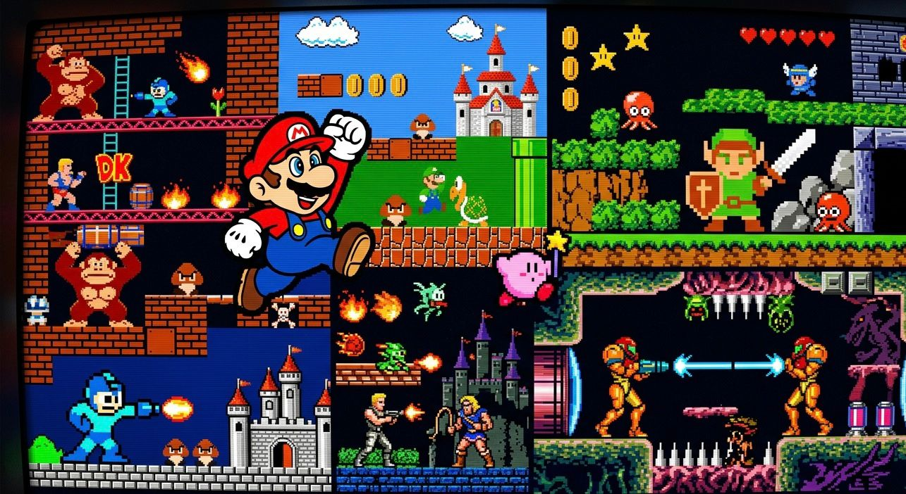
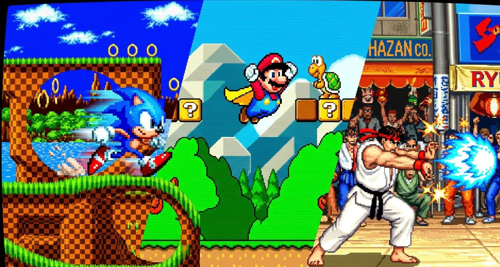
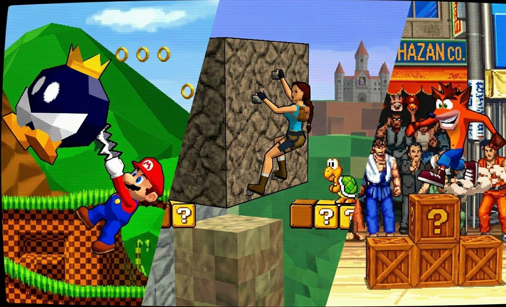
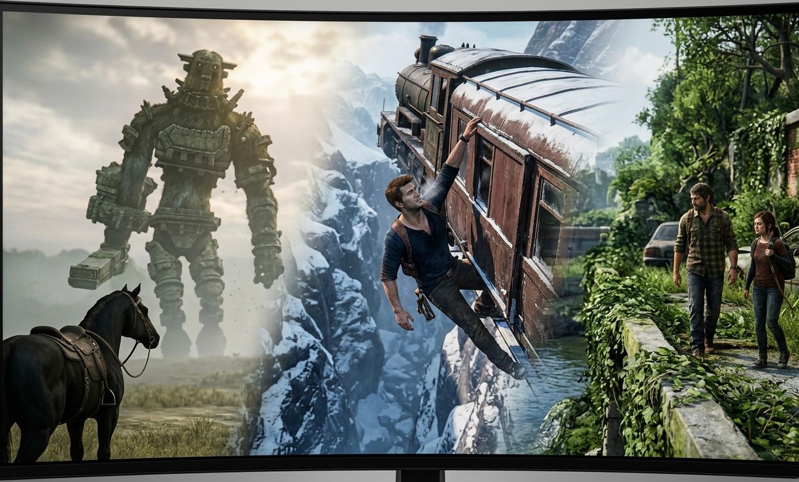
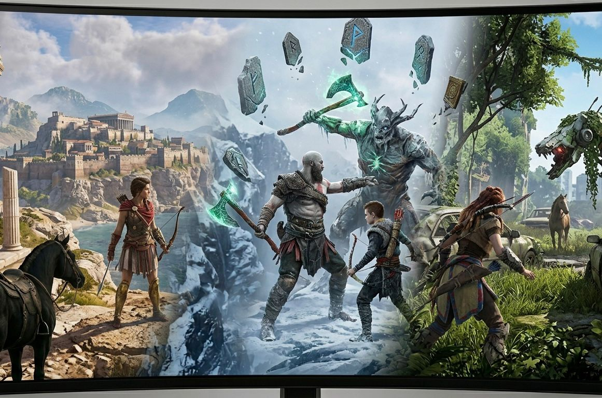

ERA 01
8-BIT
El inicio de mundos inolvidables construidos con píxeles, música chiptune y creatividad sin límites.
SCROLL INTERACTIVO
Una película web controlada por scroll: de los píxeles al raytracing.





ERA 01
El inicio de mundos inolvidables construidos con píxeles, música chiptune y creatividad sin límites.
FINAL RENDER
La evolución no termina: cada generación transforma cómo jugamos, miramos y sentimos los mundos digitales.
Sigue viviendo la experiencia explorando una colección de videojuegos clásicos que marcaron diferentes eras visuales.